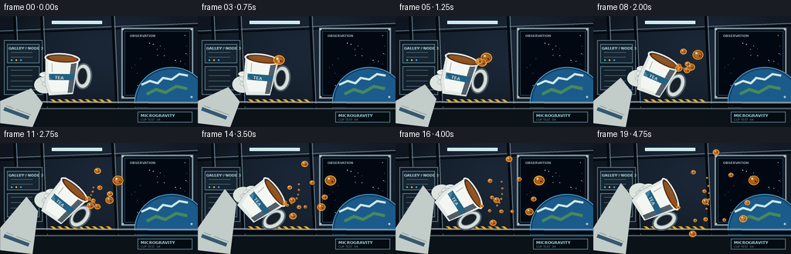
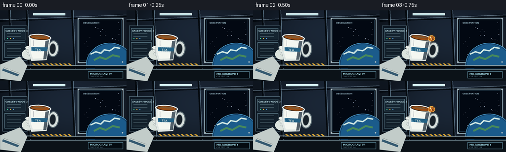

CODING AGENTS AS PIXEL WORLD MODELS
traex/GPT-5.6-Sol · mechanics_0003
点击播放 · 原生 RGB 像素
逐轮保存的候选
回放视频、检查图与代码变化。
每份候选均可单独播放。实际图片检查记录在下方工具轨迹中。
候选 01播放与检查图
点击播放 · 原生 RGB 像素


展开代码变化
--- 上一保存版本
+++ 本次保存版本
@@ -0,0 +1,212 @@
+from pathlib import Path
+import math
+import numpy as np
+from PIL import Image, ImageDraw, ImageFont, ImageFilter
+import artifact_io
+
+W,H,N = 256,144,20
+S=4
+OUT=Path(__file__).resolve().parent
+
+def font(sz, bold=False):
+ p='/usr/share/fonts/truetype/dejavu/DejaVuSans-Bold.ttf' if bold else '/usr/share/fonts/truetype/dejavu/DejaVuSans.ttf'
+ try: return ImageFont.truetype(p, sz*S)
+ except: return ImageFont.load_default()
+
+def scpts(seq): return [(int(x*S),int(y*S)) for x,y in seq]
+def rect(draw, box, **kw): draw.rectangle(tuple(int(v*S) for v in box), **kw)
+def ell(draw, box, **kw): draw.ellipse(tuple(int(v*S) for v in box), **kw)
+def line(draw, points, fill, width=1): draw.line(scpts(points), fill=fill, width=max(1,int(width*S)), joint='curve')
+
+def make_bg():
+ h,w=H*S,W*S
+ yy,xx=np.mgrid[0:h,0:w]
+ # cool, curved station wall, with subtle vignette
+ base=np.zeros((h,w,3),np.float32)
+ base[:,:,0]=16+11*(1-yy/h)+8*(xx/w)
+ base[:,:,1]=25+15*(1-yy/h)+9*(xx/w)
+ base[:,:,2]=35+22*(1-yy/h)+12*(xx/w)
+ vign=np.clip(1-0.35*((xx-w/2)/(w/2))**2-0.25*((yy-h/2)/(h/2))**2,.55,1)
+ base*=vign[:,:,None]
+ im=Image.fromarray(np.uint8(np.clip(base,0,255)),'RGB').convert('RGBA'); d=ImageDraw.Draw(im,'RGBA')
+ # ceiling ribs and left bulkhead
+ line(d,[(0,19),(256,9)],(119,142,159,65),1)
+ line(d,[(0,22),(256,12)],(2,7,12,180),2)
+ for x in (18,53,145):
+ line(d,[(x,-2),(x+7,143)],(4,9,14,120),3)
+ line(d,[(x+3,-2),(x+9,143)],(101,128,146,55),1)
+ # wall panels
+ rect(d,(5,31,55,102),fill=(12,23,34,170),outline=(93,118,132,100),width=S)
+ rect(d,(9,36,51,61),fill=(21,37,49,200),outline=(91,120,133,90),width=S)
+ rect(d,(9,65,51,96),fill=(19,32,43,190),outline=(91,120,133,80),width=S)
+ for y in (41,47,53,70,77,84,91):
+ line(d,[(14,y),(42,y)],(116,143,153,65),.6)
+ for x,y,c in [(15,57,(63,209,155,220)),(21,57,(255,183,64,220)),(27,57,(84,161,231,220))]:
+ ell(d,(x-1,y-1,x+1,y+1),fill=c)
+ # overhead soft lights
+ glow=Image.new('RGBA',im.size,(0,0,0,0)); gd=ImageDraw.Draw(glow,'RGBA')
+ rect(gd,(66,6,132,11),fill=(170,225,240,95)); rect(gd,(65,5,133,12),fill=(122,197,219,32))
+ glow=glow.filter(ImageFilter.GaussianBlur(4*S)); im=Image.alpha_composite(im,glow); d=ImageDraw.Draw(im,'RGBA')
+ rect(d,(67,6,132,10),fill=(197,232,236,180),outline=(235,255,255,160),width=S)
+ # viewport frame right
+ rect(d,(157,15,250,107),fill=(5,10,18,255),outline=(128,151,162,180),width=2*S)
+ rect(d,(161,19,246,103),fill=(2,8,18,255),outline=(37,65,82,255),width=S)
+ # stars
+ rng=np.random.default_rng(4)
+ for x,y,a in zip(rng.uniform(164,244,30),rng.uniform(22,99,30),rng.uniform(70,210,30)):
+ r=.25 if a<140 else .45
+ ell(d,(x-r,y-r,x+r,y+r),fill=(210,230,255,int(a)))
+ # Earth arc in viewport, lower right
+ ell(d,(174,66,270,157),fill=(20,65,105,255),outline=(83,166,211,230),width=S)
+ ell(d,(177,69,267,154),fill=(27,91,139,255))
+ # clouds/land arcs clipped visually by frame but already mostly viewport
+ line(d,[(183,89),(194,84),(204,87),(211,80),(222,82),(232,75),(243,77)],(205,230,225,175),3)
+ line(d,[(190,101),(202,95),(214,99),(228,91),(242,94)],(70,137,92,185),4)
+ # re-mask outer viewport boundary edges / bolts
+ for x,y in [(159,17),(248,17),(159,105),(248,105)]: ell(d,(x-1.3,y-1.3,x+1.3,y+1.3),fill=(177,191,197,220))
+ # horizontal equipment rail and table edge
+ line(d,[(0,111),(256,112)],(134,152,158,150),2)
+ line(d,[(0,115),(256,116)],(4,8,12,230),5)
+ rect(d,(0,119,256,144),fill=(11,18,24,230))
+ line(d,[(0,120),(256,120)],(117,140,149,90),1)
+ # labels
+ d.text((11*S,39*S),'GALLEY / NODE 3',font=font(4.7,True),fill=(170,199,207,170))
+ d.text((168*S,23*S),'OBSERVATION',font=font(4.2,True),fill=(139,169,181,170))
+ # warning hatch stripe
+ for x in range(65,145,9):
+ d.polygon(scpts([(x,108),(x+4,108),(x+9,112),(x+5,112)]),fill=(226,170,51,95))
+ return im
+
+BG=make_bg()
+
+def cup_layer(theta):
+ # local canvas, cup centered at 50,48; upright top at y=25
+ z=Image.new('RGBA',(100*S,100*S),(0,0,0,0)); d=ImageDraw.Draw(z,'RGBA')
+ # handle behind
+ ell(d,(66,31,89,65),fill=(215,223,220,255),outline=(81,97,105,255),width=2*S)
+ ell(d,(70,37,83,59),fill=(24,33,41,255),outline=(139,151,153,220),width=S)
+ # body shadow and porcelain body
+ d.polygon(scpts([(27,25),(71,25),(66,72),(35,76),(29,61)]),fill=(225,232,229,255),outline=(72,88,96,255))
+ d.polygon(scpts([(31,30),(67,29),(63,68),(38,71),(33,59)]),fill=(244,247,241,255))
+ # soft shaded right edge
+ d.polygon(scpts([(61,29),(68,26),(65,70),(59,71)]),fill=(156,174,177,115))
+ # blue station stripe
+ d.polygon(scpts([(33,48),(66,46),(65,54),(34,56)]),fill=(39,112,151,210))
+ d.text((41*S,49*S),'TEA',font=font(5.5,True),fill=(226,244,241,220))
+ # rim, dark inside and tea surface
+ ell(d,(26,20,72,34),fill=(92,106,107,255),outline=(244,249,242,255),width=2*S)
+ ell(d,(29,22,69,31.5),fill=(72,41,18,255))
+ ell(d,(31,23,68,30.5),fill=(154,78,22,255))
+ ell(d,(34,24,61,27),fill=(231,144,51,130))
+ # rim highlight
+ line(d,[(29,23),(39,20.8),(58,21.3),(69,25)],(255,255,250,220),1.2)
+ # glossy body
+ line(d,[(36,34),(37,45)],(255,255,255,170),1)
+ rot=z.rotate(-theta,resample=Image.Resampling.BICUBIC,expand=False,center=(50*S,50*S))
+ return rot
+
+def trans_point(cx,cy,lx,ly,theta):
+ a=math.radians(theta); return (cx+math.cos(a)*lx-math.sin(a)*ly, cy+math.sin(a)*lx+math.cos(a)*ly)
+
+def draw_glove(im,cx,cy,theta):
+ # behind cup, gripping from lower-left
+ g=Image.new('RGBA',im.size,(0,0,0,0)); d=ImageDraw.Draw(g,'RGBA')
+ wrist=trans_point(cx,cy,-31,26,theta); grip=trans_point(cx,cy,-22,12,theta)
+ # sleeve
+ d.polygon(scpts([(0,139),(0,110),(wrist[0]-7,wrist[1]-8),(wrist[0]+8,wrist[1]+11),(42,144)]),fill=(194,204,201,255),outline=(72,86,93,255))
+ line(d,[(5,120),(37,132)],(57,96,121,230),5)
+ line(d,[(8,116),(40,128)],(236,243,237,150),1)
+ # palm
+ ell(d,(grip[0]-13,grip[1]-10,grip[0]+14,grip[1]+12),fill=(220,228,222,255),outline=(81,95,100,255),width=1)
+ # fingers curling around cup side
+ for j in range(3):
+ p=trans_point(cx,cy,-23+j*2,-1+j*6,theta)
+ ell(d,(p[0]-6,p[1]-3,p[0]+8,p[1]+4),fill=(236-j*8,241-j*7,235-j*6,255),outline=(90,103,106,230),width=1)
+ line(d,[(p[0]-2,p[1]-1),(p[0]+5,p[1])],(157,169,168,170),.6)
+ im.alpha_composite(g)
+
+def tea_blob(layer,x,y,r,alpha=255,stretch=1.0,angle=0):
+ # blurred halo plus dimensional translucent amber sphere
+ halo=Image.new('RGBA',layer.size,(0,0,0,0)); hd=ImageDraw.Draw(halo,'RGBA')
+ hd.ellipse(((x-r*1.2)*S,(y-r*1.2)*S,(x+r*1.2)*S,(y+r*1.2)*S),fill=(237,116,20,55))
+ halo=halo.filter(ImageFilter.GaussianBlur(max(1,r*S*.55))); layer.alpha_composite(halo)
+ d=ImageDraw.Draw(layer,'RGBA')
+ # modest stretched oriented appearance by polygon/ellipse; spheres dominant
+ ell(d,(x-r,y-r*.88,x+r,y+r*.88),fill=(100,42,9,min(alpha,245)),outline=(255,186,72,min(alpha,235)),width=max(S,int(r*S*.18)))
+ ell(d,(x-r*.76,y-r*.68,x+r*.72,y+r*.68),fill=(207,98,17,min(alpha,225)))
+ ell(d,(x-r*.53,y-r*.48,x+r*.48,y+r*.45),fill=(237,132,30,min(alpha,185)))
+ ell(d,(x-r*.47,y-r*.52,x-r*.10,y-r*.14),fill=(255,235,176,min(alpha,230)))
+ ell(d,(x+r*.18,y+r*.05,x+r*.48,y+r*.35),fill=(116,47,8,min(alpha,125)))
+
+# Droplets: birth, velocity x/y per frame, radius, small acceleration / wobble
+DROPS=[
+ (3,5.7,-1.4,7.0,.04),(4,4.7,1.8,5.2,.07),(5,3.2,-4.1,4.2,.03),
+ (6,6.6,.5,3.6,.02),(7,2.1,3.8,4.6,-.04),(8,5.5,-2.7,3.1,.05),
+ (9,3.7,2.5,2.7,-.03),(10,6.1,2.7,2.2,.02),(11,1.8,-4.6,2.9,.04),
+ (12,4.4,-.2,4.1,.01),(13,3.1,3.4,2.1,-.02),(14,5.6,-3.4,2.4,.03)
+]
+
+def cup_state(i):
+ # deliberate smooth careful tilt
+ u=i/(N-1)
+ ease=u*u*(3-2*u)
+ theta=4+61*ease
+ return 80+2*math.sin(i*.18),78+1.2*math.sin(i*.25),theta
+
+def frame(i):
+ im=BG.copy()
+ cx,cy,theta=cup_state(i)
+ draw_glove(im,cx,cy,theta)
+ im.alpha_composite(cup_layer(theta),(int((cx-50)*S),int((cy-50)*S)))
+ liquid=Image.new('RGBA',im.size,(0,0,0,0)); ld=ImageDraw.Draw(liquid,'RGBA')
+ lip=trans_point(cx,cy,19,-25,theta)
+ # Tea clinging to lip and a curved, fragmenting neck during active pour
+ if i>=3:
+ ell(ld,(lip[0]-2.3,lip[1]-2.0,lip[0]+2.5,lip[1]+2.2),fill=(190,82,12,245),outline=(255,180,58,240),width=S)
+ if 3<=i<=12:
+ age=i-3
+ length=min(17,4+age*1.6)
+ ang=math.radians(theta-5)
+ end=(lip[0]+length*math.cos(ang),lip[1]+length*math.sin(ang))
+ mid=((lip[0]+end[0])/2+2*math.sin(i*.7),(lip[1]+end[1])/2-2)
+ pts=[]
+ for q in np.linspace(0,1,16):
+ x=(1-q)**2*lip[0]+2*(1-q)*q*mid[0]+q*q*end[0]
+ y=(1-q)**2*lip[1]+2*(1-q)*q*mid[1]+q*q*end[1]
+ pts.append((x,y))
+ line(ld,pts,(169,68,8,240),max(1.1,4.3-age*.22))
+ line(ld,[(x-0.5,y-0.6) for x,y in pts],(255,157,42,180),max(.5,1.2-age*.04))
+ tea_blob(liquid,end[0],end[1],max(2.4,5-age*.14))
+ # independent zero-g droplets emitted from historical lip positions
+ for k,(birth,vx,vy,r,curve) in enumerate(DROPS):
+ if i<birth: continue
+ bx,by,bth=cup_state(birth)
+ ox,oy=trans_point(bx,by,19,-25,bth)
+ a=i-birth+0.3
+ # initial direction is deliberately diverse, with tiny cabin airflow curvature
+ x=ox+vx*a+curve*a*a+1.1*math.sin(.45*a+k)
+ y=oy+vy*a+.055*a*a+0.7*math.cos(.5*a+k*.8)
+ # fade only if near boundary
+ if -10<x<W+10 and -10<y<H+10:
+ tea_blob(liquid,x,y,r*(1+.04*math.sin(a*.7+k)),255)
+ # tiny satellite droplets for clear multi-direction motion
+ for k in range(6):
+ birth=7+k
+ if i>=birth:
+ bx,by,bth=cup_state(birth); ox,oy=trans_point(bx,by,18,-24,bth); a=i-birth
+ va=(k-2.5)*.62
+ x=ox+(3.3+.35*k)*a
+ y=oy+va*a+.35*math.sin(a+k)
+ if x<W-2: tea_blob(liquid,x,y,1.15+.18*(k%2),230)
+ im=Image.alpha_composite(im,liquid)
+ # foreground HUD-like caption integrated into scene
+ d=ImageDraw.Draw(im,'RGBA')
+ rect(d,(178,124,249,138),fill=(4,11,17,155),outline=(84,123,139,120),width=S)
+ d.text((182*S,126*S),'MICROGRAVITY',font=font(5.2,True),fill=(155,208,219,210))
+ d.text((182*S,132*S),'CUP TEST 04',font=font(3.8),fill=(112,151,164,185))
+ # final antialiasing
+ return np.asarray(im.convert('RGB').resize((W,H),Image.Resampling.LANCZOS),dtype=np.uint8)
+
+frames=np.stack([frame(i) for i in range(N)])
+artifact_io.save(frames,OUT)
+print('saved',frames.shape,frames.dtype)
可观测工具轨迹
实际执行的命令与返回图片。
命令 1exit 0
/bin/bash -lc "cat prompt.txt && printf '\\n---RULES---\\n' && cat GENERATION_RULES.md && printf '\\n---SPEC---\\n' && cat task_spec.json"
命令 2exit 0
/bin/bash -lc "find . -maxdepth 2 -type f -printf '%p\\n' | sort && printf '\\nTOOLS\\n' && command -v ffmpeg && command -v python3 && command -v convert || true"
命令 3exit 0
/bin/bash -lc 'cat artifact_io.py'
命令 4exit 0
/bin/bash -lc "cat > generate.py <<'PY'
from pathlib import Path
import math
import numpy as np
from PIL import Image, ImageDraw, ImageFont, ImageFilter
import artifact_io
W,H,N = 256,144,20
S=4
OUT=Path(__file__).resolve().parent
def font(sz, bold=False):
p='/usr/share/fonts/truetype/dejavu/DejaVuSans-Bold.ttf' if bold else '/usr/share/fonts/truetype/dejavu/DejaVuSans.ttf'
try: return ImageFont.truetype(p, sz*S)
except: return ImageFont.load_default()
def scpts(seq): return [(int(x*S),int(y*S)) for x,y in seq]
def rect(draw, box, **kw): draw.rectangle(tuple(int(v*S) for v in box), **kw)
def ell(draw, box, **kw): draw.ellipse(tuple(int(v*S) for v in box), **kw)
def line(draw, points, fill, width=1): draw.line(scpts(points), fill=fill, width=max(1,int(width*S)), joint='curve')
def make_bg():
h,w=H*S,W*S
yy,xx=np.mgrid[0:h,0:w]
# cool, curved station wall, with subtle vignette
base=np.zeros((h,w,3),np.float32)
base[:,:,0]=16+11*(1-yy/h)+8*(xx/w)
base[:,:,1]=25+15*(1-yy/h)+9*(xx/w)
base[:,:,2]=35+22*(1-yy/h)+12*(xx/w)
vign=np.clip(1-0.35*((xx-w/2)/(w/2))**2-0.25*((yy-h/2)/(h/2))**2,.55,1)
base*=vign[:,:,None]
im=Image.fromarray(np.uint8(np.clip(base,0,255)),'RGB').convert('RGBA'); d=ImageDraw.Draw(im,'RGBA')
# ceiling ribs and left bulkhead
line(d,[(0,19),(256,9)],(119,142,159,65),1)
line(d,[(0,22),(256,12)],(2,7,12,180),2)
for x in (18,53,145):
line(d,[(x,-2),(x+7,143)],(4,9,14,120),3)
line(d,[(x+3,-2),(x+9,143)],(101,128,146,55),1)
# wall panels
rect(d,(5,31,55,102),fill=(12,23,34,170),outline=(93,118,132,100),width=S)
rect(d,(9,36,51,61),fill=(21,37,49,200),outline=(91,120,133,90),width=S)
rect(d,(9,65,51,96),fill=(19,32,43,190),outline=(91,120,133,80),width=S)
for y in (41,47,53,70,77,84,91):
line(d,[(14,y),(42,y)],(116,143,153,65),.6)
for x,y,c in [(15,57,(63,209,155,220)),(21,57,(255,183,64,220)),(27,57,(84,161,231,220))]:
ell(d,(x-1,y-1,x+1,y+1),fill=c)
# overhead soft lights
glow=Image.new('RGBA',im.size,(0,0,0,0)); gd=ImageDraw.Draw(glow,'RGBA')
rect(gd,(66,6,132,11),fill=(170,225,240,95)); rect(gd,(65,5,133,12),fill=(122,197,219,32))
glow=glow.filter(ImageFilter.GaussianBlur(4*S)); im=Image.alpha_composite(im,glow); d=ImageDraw.Draw(im,'RGBA')
rect(d,(67,6,132,10),fill=(197,232,236,180),outline=(235,255,255,160),width=S)
# viewport frame right
rect(d,(157,15,250,107),fill=(5,10,18,255),outline=(128,151,162,180),width=2*S)
rect(d,(161,19,246,103),fill=(2,8,18,255),outline=(37,65,82,255),width=S)
# stars
rng=np.random.default_rng(4)
for x,y,a in zip(rng.uniform(164,244,30),rng.uniform(22,99,30),rng.uniform(70,210,30)):
r=.25 if a<140 else .45
ell(d,(x-r,y-r,x+r,y+r),fill=(210,230,255,int(a)))
# Earth arc in viewport, lower right
ell(d,(174,66,270,157),fill=(20,65,105,255),outline=(83,166,211,230),width=S)
ell(d,(177,69,267,154),fill=(27,91,139,255))
# clouds/land arcs clipped visually by frame but already mostly viewport
line(d,[(183,89),(194,84),(204,87),(211,80),(222,82),(232,75),(243,77)],(205,230,225,175),3)
line(d,[(190,101),(202,95),(214,99),(228,91),(242,94)],(70,137,92,185),4)
# re-mask outer viewport boundary edges / bolts
for x,y in [(159,17),(248,17),(159,105),(248,105)]: ell(d,(x-1.3,y-1.3,x+1.3,y+1.3),fill=(177,191,197,220))
# horizontal equipment rail and table edge
line(d,[(0,111),(256,112)],(134,152,158,150),2)
line(d,[(0,115),(256,116)],(4,8,12,230),5)
rect(d,(0,119,256,144),fill=(11,18,24,230))
line(d,[(0,120),(256,120)],(117,140,149,90),1)
# labels
d.text((11*S,39*S),'GALLEY / NODE 3',font=font(4.7,True),fill=(170,199,207,170))
d.text((168*S,23*S),'OBSERVATION',font=font(4.2,True),fill=(139,169,181,170))
# warning hatch stripe
for x in range(65,145,9):
d.polygon(scpts([(x,108),(x+4,108),(x+9,112),(x+5,112)]),fill=(226,170,51,95))
return im
BG=make_bg()
def cup_layer(theta):
# local canvas, cup centered at 50,48; upright top at y=25
z=Image.new('RGBA',(100*S,100*S),(0,0,0,0)); d=ImageDraw.Draw(z,'RGBA')
# handle behind
ell(d,(66,31,89,65),fill=(215,223,220,255),outline=(81,97,105,255),width=2*S)
ell(d,(70,37,83,59),fill=(24,33,41,255),outline=(139,151,153,220),width=S)
# body shadow and porcelain body
d.polygon(scpts([(27,25),(71,25),(66,72),(35,76),(29,61)]),fill=(225,232,229,255),outline=(72,88,96,255))
d.polygon(scpts([(31,30),(67,29),(63,68),(38,71),(33,59)]),fill=(244,247,241,255))
# soft shaded right edge
d.polygon(scpts([(61,29),(68,26),(65,70),(59,71)]),fill=(156,174,177,115))
# blue station stripe
d.polygon(scpts([(33,48),(66,46),(65,54),(34,56)]),fill=(39,112,151,210))
d.text((41*S,49*S),'TEA',font=font(5.5,True),fill=(226,244,241,220))
# rim, dark inside and tea surface
ell(d,(26,20,72,34),fill=(92,106,107,255),outline=(244,249,242,255),width=2*S)
ell(d,(29,22,69,31.5),fill=(72,41,18,255))
ell(d,(31,23,68,30.5),fill=(154,78,22,255))
ell(d,(34,24,61,27),fill=(231,144,51,130))
# rim highlight
line(d,[(29,23),(39,20.8),(58,21.3),(69,25)],(255,255,250,220),1.2)
# glossy body
line(d,[(36,34),(37,45)],(255,255,255,170),1)
rot=z.rotate(-theta,resample=Image.Resampling.BICUBIC,expand=False,center=(50*S,50*S))
return rot
def trans_point(cx,cy,lx,ly,theta):
a=math.radians(theta); return (cx+math.cos(a)*lx-math.sin(a)*ly, cy+math.sin(a)*lx+math.cos(a)*ly)
def draw_glove(im,cx,cy,theta):
# behind cup, gripping from lower-left
g=Image.new('RGBA',im.size,(0,0,0,0)); d=ImageDraw.Draw(g,'RGBA')
wrist=trans_point(cx,cy,-31,26,theta); grip=trans_point(cx,cy,-22,12,theta)
# sleeve
d.polygon(scpts([(0,139),(0,110),(wrist[0]-7,wrist[1]-8),(wrist[0]+8,wrist[1]+11),(42,144)]),fill=(194,204,201,255),outline=(72,86,93,255))
line(d,[(5,120),(37,132)],(57,96,121,230),5)
line(d,[(8,116),(40,128)],(236,243,237,150),1)
# palm
ell(d,(grip[0]-13,grip[1]-10,grip[0]+14,grip[1]+12),fill=(220,228,222,255),outline=(81,95,100,255),width=1)
# fingers curling around cup side
for j in range(3):
p=trans_point(cx,cy,-23+j*2,-1+j*6,theta)
ell(d,(p[0]-6,p[1]-3,p[0]+8,p[1]+4),fill=(236-j*8,241-j*7,235-j*6,255),outline=(90,103,106,230),width=1)
line(d,[(p[0]-2,p[1]-1),(p[0]+5,p[1])],(157,169,168,170),.6)
im.alpha_composite(g)
def tea_blob(layer,x,y,r,alpha=255,stretch=1.0,angle=0):
# blurred halo plus dimensional translucent amber sphere
halo=Image.new('RGBA',layer.size,(0,0,0,0)); hd=ImageDraw.Draw(halo,'RGBA')
hd.ellipse(((x-r*1.2)*S,(y-r*1.2)*S,(x+r*1.2)*S,(y+r*1.2)*S),fill=(237,116,20,55))
halo=halo.filter(ImageFilter.GaussianBlur(max(1,r*S*.55))); layer.alpha_composite(halo)
d=ImageDraw.Draw(layer,'RGBA')
# modest stretched oriented appearance by polygon/ellipse; spheres dominant
ell(d,(x-r,y-r*.88,x+r,y+r*.88),fill=(100,42,9,min(alpha,245)),outline=(255,186,72,min(alpha,235)),width=max(S,int(r*S*.18)))
ell(d,(x-r*.76,y-r*.68,x+r*.72,y+r*.68),fill=(207,98,17,min(alpha,225)))
ell(d,(x-r*.53,y-r*.48,x+r*.48,y+r*.45),fill=(237,132,30,min(alpha,185)))
ell(d,(x-r*.47,y-r*.52,x-r*.10,y-r*.14),fill=(255,235,176,min(alpha,230)))
ell(d,(x+r*.18,y+r*.05,x+r*.48,y+r*.35),fill=(116,47,8,min(alpha,125)))
# Droplets: birth, velocity x/y per frame, radius, small acceleration / wobble
DROPS=[
(3,5.7,-1.4,7.0,.04),(4,4.7,1.8,5.2,.07),(5,3.2,-4.1,4.2,.03),
(6,6.6,.5,3.6,.02),(7,2.1,3.8,4.6,-.04),(8,5.5,-2.7,3.1,.05),
(9,3.7,2.5,2.7,-.03),(10,6.1,2.7,2.2,.02),(11,1.8,-4.6,2.9,.04),
(12,4.4,-.2,4.1,.01),(13,3.1,3.4,2.1,-.02),(14,5.6,-3.4,2.4,.03)
]
def cup_state(i):
# deliberate smooth careful tilt
u=i/(N-1)
ease=u*u*(3-2*u)
theta=4+61*ease
return 80+2*math.sin(i*.18),78+1.2*math.sin(i*.25),theta
def frame(i):
im=BG.copy()
cx,cy,theta=cup_state(i)
draw_glove(im,cx,cy,theta)
im.alpha_composite(cup_layer(theta),(int((cx-50)*S),int((cy-50)*S)))
liquid=Image.new('RGBA',im.size,(0,0,0,0)); ld=ImageDraw.Draw(liquid,'RGBA')
lip=trans_point(cx,cy,19,-25,theta)
# Tea clinging to lip and a curved, fragmenting neck during active pour
if i>=3:
ell(ld,(lip[0]-2.3,lip[1]-2.0,lip[0]+2.5,lip[1]+2.2),fill=(190,82,12,245),outline=(255,180,58,240),width=S)
if 3<=i<=12:
age=i-3
length=min(17,4+age*1.6)
ang=math.radians(theta-5)
end=(lip[0]+length*math.cos(ang),lip[1]+length*math.sin(ang))
mid=((lip[0]+end[0])/2+2*math.sin(i*.7),(lip[1]+end[1])/2-2)
pts=[]
for q in np.linspace(0,1,16):
x=(1-q)**2*lip[0]+2*(1-q)*q*mid[0]+q*q*end[0]
y=(1-q)**2*lip[1]+2*(1-q)*q*mid[1]+q*q*end[1]
pts.append((x,y))
line(ld,pts,(169,68,8,240),max(1.1,4.3-age*.22))
line(ld,[(x-0.5,y-0.6) for x,y in pts],(255,157,42,180),max(.5,1.2-age*.04))
tea_blob(liquid,end[0],end[1],max(2.4,5-age*.14))
# independent zero-g droplets emitted from historical lip positions
for k,(birth,vx,vy,r,curve) in enumerate(DROPS):
if i<birth: continue
bx,by,bth=cup_state(birth)
ox,oy=trans_point(bx,by,19,-25,bth)
a=i-birth+0.3
# initial direction is deliberately diverse, with tiny cabin airflow curvature
x=ox+vx*a+curve*a*a+1.1*math.sin(.45*a+k)
y=oy+vy*a+.055*a*a+0.7*math.cos(.5*a+k*.8)
# fade only if near boundary
if -10<x<W+10 and -10<y<H+10:
tea_blob(liquid,x,y,r*(1+.04*math.sin(a*.7+k)),255)
# tiny satellite droplets for clear multi-direction motion
for k in range(6):
birth=7+k
if i>=birth:
bx,by,bth=cup_state(birth); ox,oy=trans_point(bx,by,18,-24,bth); a=i-birth
va=(k-2.5)*.62
x=ox+(3.3+.35*k)*a
y=oy+va*a+.35*math.sin(a+k)
if x<W-2: tea_blob(liquid,x,y,1.15+.18*(k%2),230)
im=Image.alpha_composite(im,liquid)
# foreground HUD-like caption integrated into scene
d=ImageDraw.Draw(im,'RGBA')
rect(d,(178,124,249,138),fill=(4,11,17,155),outline=(84,123,139,120),width=S)
d.text((182*S,126*S),'MICROGRAVITY',font=font(5.2,True),fill=(155,208,219,210))
d.text((182*S,132*S),'CUP TEST 04',font=font(3.8),fill=(112,151,164,185))
# final antialiasing
return np.asarray(im.convert('RGB').resize((W,H),Image.Resampling.LANCZOS),dtype=np.uint8)
frames=np.stack([frame(i) for i in range(N)])
artifact_io.save(frames,OUT)
print('saved',frames.shape,frames.dtype)
PY
python3 generate.py"命令 5exit 0
/bin/bash -lc "python3 - <<'PY'
import json, numpy as np
from PIL import Image
z=np.load('pixels.npz')['pixels']
s=json.load(open('task_spec.json'))
print('pixels', z.shape, z.dtype, 'range', int(z.min()), int(z.max()))
print('frames',len(list(__import__('pathlib').Path('frames').glob('*.png'))))
print('artifacts:')
for p in ['generate.py','pixels.npz','index.html','inspection.png','transition_check.png']:
import os
print(p, os.path.getsize(p))
# verify unpack first matches png
p=z[:,:,0]
rgb=np.stack([(p>>16)&255,(p>>8)&255,p&255],axis=-1).astype('uint8')
a=np.asarray(Image.open('frames/00.png'))
print('first-match',np.array_equal(rgb,a),a.shape,a.dtype)
PY"视觉工具实际返回图片 1

视觉工具实际返回图片 2

保存候选 1 份；完成命令 5 次；可验证图片返回 2 张。原始 API 响应与完整日志保留在本地。